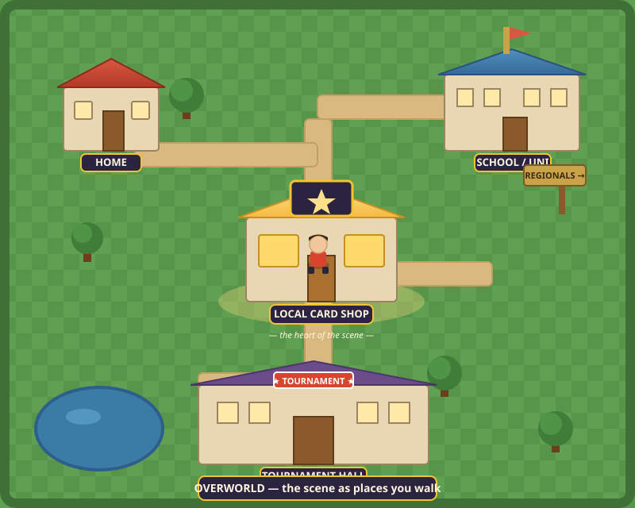
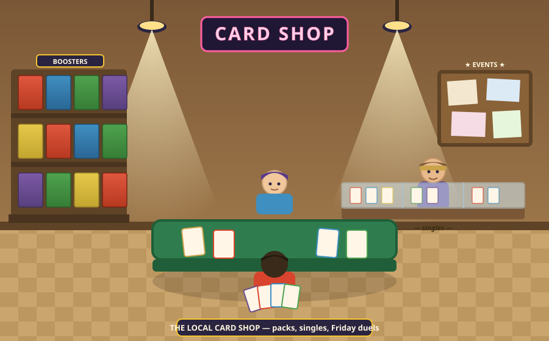
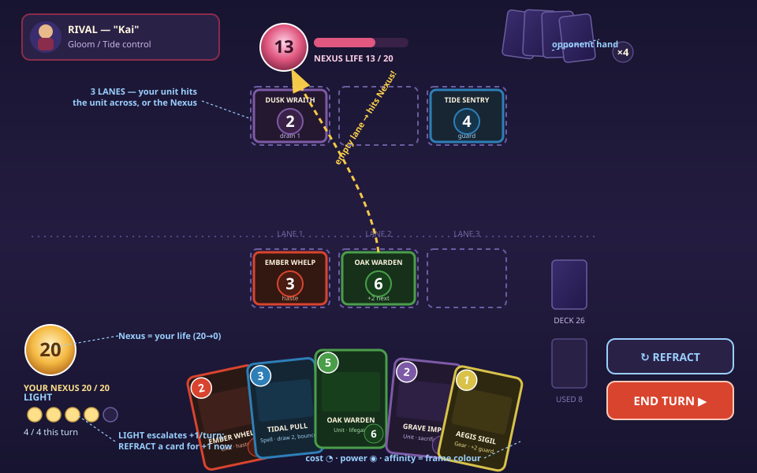
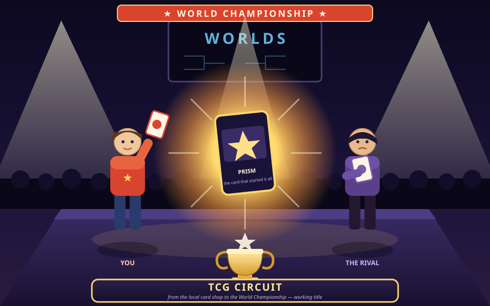
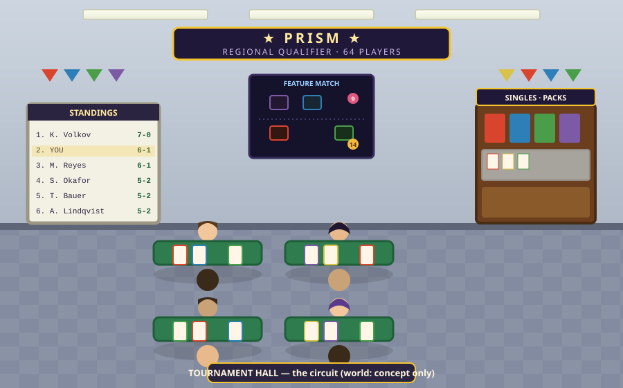
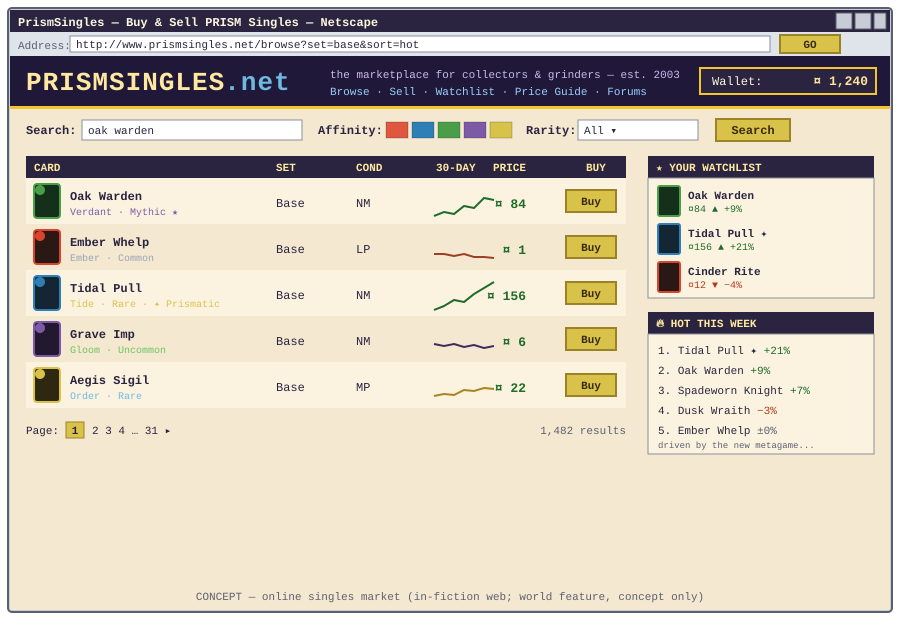
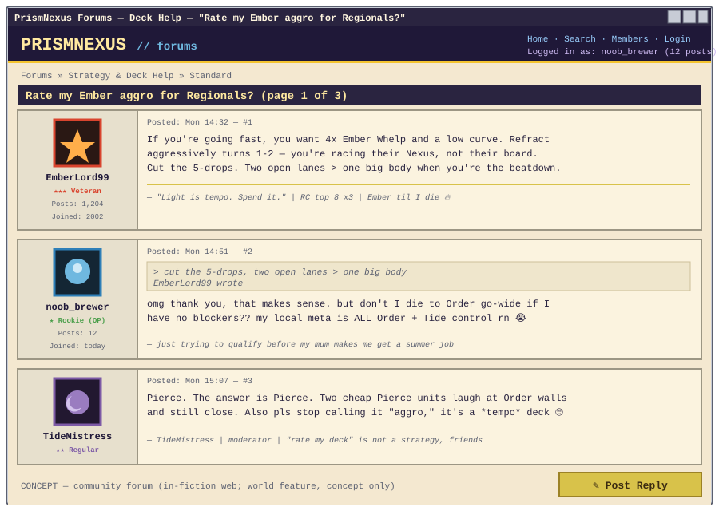
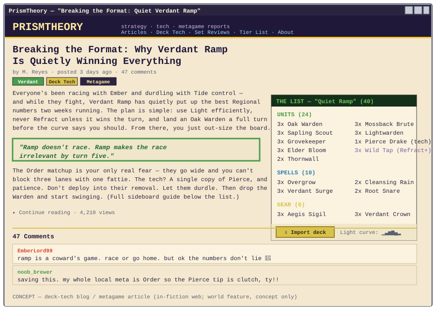

Top-down Pokémon-style overworld. Every part of the hobby is a location: home (collection HQ), the local card shop (the hub), school/uni (the life-sim spine), the tournament hall, and roads out to Regionals. Content scales by adding maps, NPCs, and dialogue — no 3D asset wall.

Booster boxes on the shelves, singles under glass, the owner behind the counter, an events board, and two kids dueling at the play table. Where you buy packs, flip singles, meet your rival, and grind Friday-night tournaments.

The card game you actually master. 3 lanes: your unit hits the unit across from it, or the Nexus (life, 20→0) if the lane is empty. Light escalates +1 each turn; Refract a card from hand for +1 now — the skill lever. Cost ◔, power ◉, and frame colour = Affinity.

The career arc in one frame: you and your arc-rival on the Worlds stage, the trophy, the card that started it all. From the back of the local shop to the spotlight.

Standings whiteboard, a feature-match stage, a vendor booth, rows of folding tables under the fluorescents. The escalating venues (locals → the regional qualifier) you travel to.

The economy made tangible: search/filter by Affinity, a listings table with 30-day price sparklines, a watchlist, a wallet, "hot this week." Rendered as the early-2000s web (the cohesive "2003, kitchen table" look — see art-direction.md).

phpBB-era deck-help culture: avatars, ranks, signatures, quoted replies, a mod telling everyone it's "tempo, not aggro." The metagame conversation that makes the scene feel alive.

A set-review / deck-tech article with an embedded importable decklist, a Light-curve readout, tags, and a comment thread. The "content layer" of the hobby.